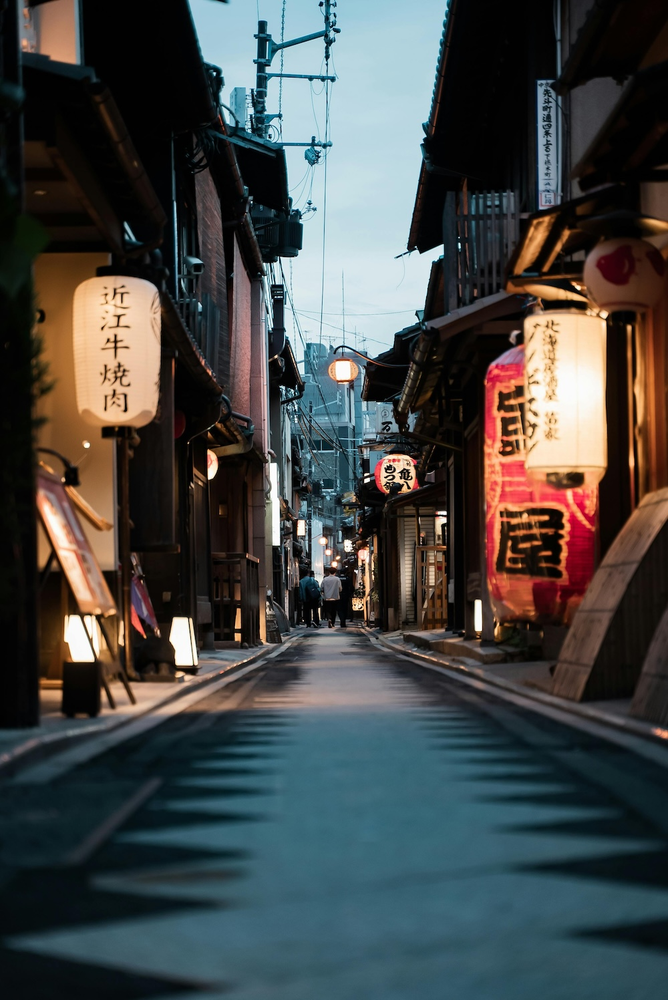
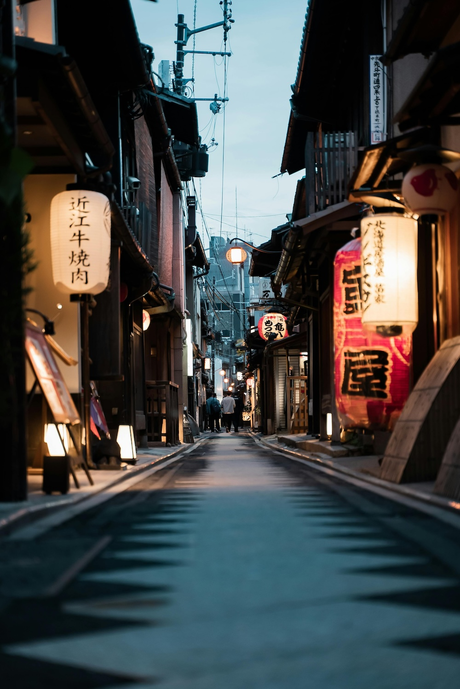

Nuestro Sushi

Maki
Otro de los tipos de sushi más conocidos. Consiste en rollitos de arroz envueltos en alga. En el interior suele añadirse una pieza de pescado como atún, salmón, langostino y cangrejo.
PruebaloUramaki
Este tipo de sushi tiene el arroz al revés, es decir, en la parte exterior rodeando el alga Nori que al mismo tiempo envuelve el centro de la pieza pudiendo ser pescado, fruta y verdura. Comunmente se le añade sésamo negro.
PruebaloNigiri
Es el sushi más popular entre los seguidores del pescado. Su base de arroz se prensa con las manos, dándole su característica forma ovalada. Se cubre con una pieza de pescado crudo, marisco u otro ingrediente plano.
PruebaloDragon Roll
Por último os presentamos el sushi Dragon, se trata de un plato grande. Incluye una base de arroz de forma cilíndrica donde se puede añadir pescado crudo, aguacate, lechuga, o cebolla crujiente entre otros posibles ingredientes.
Pruebalo¡Conoce la historia de nuestro restaurante!
Nuestro restaurante japonés en Sevilla nació de la pasión de su fundador, Kenji Tanaka, por compartir la auténtica experiencia culinaria de Japón con el mundo. Kenji, oriundo de Osaka, creció rodeado de los vibrantes mercados de pescado y aprendió el arte del sushi desde temprana edad, siguiendo la tradición familiar que se remonta a varias generaciones de chefs. Kenji llegó a Sevilla hace más de dos décadas, enamorado de la ciudad y su gente. Fue aquí donde conoció a su esposa, María, una sevillana amante de la gastronomía. Juntos, soñaron con crear un lugar donde la esencia de Japón y el calor de Andalucía se fusionaran en una experiencia culinaria única. Tras años de planificación y trabajo arduo, su sueño se materializó con la apertura del restaurante en 2005. Desde el primer día, nuestro restaurante ha sido un reflejo del compromiso de Kenji y María con la excelencia culinaria y el servicio de calidad.
En nuestro restaurante de sushi, te espera una experiencia gastronómica única y llena de sabores auténticos. Sumérgete en un viaje culinario que fusiona la tradición japonesa con un toque moderno y creativo. Cada plato que preparamos es una obra maestra, elaborada con los ingredientes más frescos y de la más alta calidad. Desde los clásicos nigiri y sashimi hasta nuestras creaciones exclusivas, cada bocado es una explosión de sabor y frescura.
 

INFALTABLES
- VEGGIE ROLL
- TEMPURA ROLL
- SASHIMI
Para quienes prefieren opciones sin pescado ni marisco, hay una variedad de sushi vegetariano disponible: Kappa Maki, que es un rollo de pepino envuelto en alga nori y arroz; Shiitake Nigiri, una bola de arroz con una rebanada de seta shiitake marinada encima; Avocado Maki, un rollo de aguacate envuelto en alga nori y arroz; Tamago Nigiri, una bola de arroz con una rebanada de tortilla japonesa dulce encima; Vegetable Tempura Roll, un rollo relleno de vegetales tempura (fritos); y Yasai Temaki, un cono de alga nori relleno de arroz y vegetales frescos como pepino, zanahoria y aguacate.
El Tempura Roll es un tipo de sushi muy popular que destaca por su delicioso contraste de texturas y sabores. Este rollo generalmente se compone de mariscos o vegetales que han sido recubiertos con una masa ligera y crujiente de tempura y luego fritos. Los ingredientes tempurizados se envuelven en una hoja de alga nori y arroz, y a menudo se combinan con otros ingredientes frescos como aguacate, pepino, y mayonesa japonesa para realzar el sabor.
El Sashimi es una exquisitez japonesa que destaca por su sencillez y calidad de ingredientes. Consiste en finas láminas de pescado crudo fresco, cortadas con precisión y servidas sin ningún tipo de arroz ni aderezo. La clave del sashimi está en la calidad y frescura del pescado utilizado, que puede incluir variedades como salmón, atún, hamachi (pez limón), vieira, entre otros, dependiendo de la disponibilidad y la temporada. Tradicionalmente, se acompaña con wasabi (rábano picante japonés) y salsa de soya para realzar su sabor sin ocultar la frescura natural del pescado
CONOCE NUESTRO RESTAURANTE
Reserva tu mesa
Testimonios de clientes satisfechos
Lucía
"¡El mejor sushi que he probado! Los sabores son increíbles y el servicio es excelente. Definitivamente volveré."
Pablo
"Sushi, ofrece una experiencia gastronómica única. Los ingredientes son frescos y el ambiente es encantador. ¡Altamente recomendado!"
Simón
"Cada vez que visito Sushi, me sorprenden con nuevos platos deliciosos. ¡Es un lugar que no te puedes perder si eres amante del sushi!"